Simulation
陽春召我以煙景，大塊假我以文章。《李白．春夜宴桃李園序》
Simulation
撰寫程式，模擬行為。沒有前例，那就創例。
範例：印出直角三角形
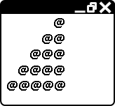不加思索，窮舉試誤。
分割概念，編排步驟。
抽取概念，變成函式。
抽取差異，變成參數。
對比排比，調整參數。
經過整頓，一目了然。容易閱讀，方便維護。
UVa 10550
範例：排隊上車
等車的人排成一列。人不時抵達，隊伍增長；車不時抵達，隊伍減短。請隨時記錄排隊隊伍依序是誰。
分割概念，編排步驟。
抽取概念，變成函式。
對比排比，調整函式。
連同資料，變成物件。
聯想他物，發明模型。
UVa 10267 476 477 478
範例：轉骰子
請辨別兩顆骰子一不一樣。骰子經過旋轉後，如果六個對應的面，上面的點數皆相同，則骰子視為相同。
要辨別兩顆骰子一不一樣，一種方式是旋轉其中一顆骰子，再跟另一顆比對。必須將骰子所有可能的情形都轉出來才行。
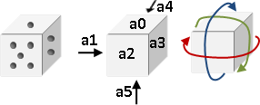骰子有六個面：上下前後左右。建立六個變數、或者六格的陣列，分別儲存六個面的點數。陣列的第0格存入上面的點數、第1格存左面的點數、……。當然也可以採用不同的儲存方法。
骰子有三種旋轉方向：東西方向、南北方向、時鐘方向。我個人偏好的轉法是：東西方向轉一圈，順時針方向轉一圈，南北方向轉一下，以上動作循環四次，就能轉出所有情形。
亦得採用其他轉法，最好的轉法只需轉24次，讀者可以想想看怎麼做。
亦得預先計算所有旋轉結果，儲存於lookup table，以節省旋轉時間。
UVa 253 10877
範例：踩地雷
試著用程式模擬踩地雷吧！
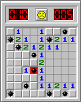UVa 10189 10279 11142 ICPC 4335
範例：撲克牌
試著用程式模擬各種撲克牌遊戲吧！
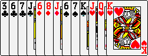UVa 127 131 162 170 178 181 451 462 555
範例：下棋
試著用程式模擬各種棋吧！
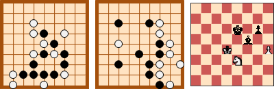UVa 220 852 10196 10363 10996 11210 1589
範例：試算表
試著用程式模擬試算表吧！
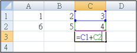UVa 196 215 512
Modeling
前事不忘，後事之師。《戰國策》
Modeling
把問題對應到耳熟能詳的模型，套用既有模型解決新問題。
範例：平行四邊形面積
小學數學老師教過：長方形的面積是「長乘寬」。儘管不知道原因，不過這個公式肯定是正確的。那麼，請問平行四邊形面積如何計算？
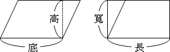把平行四邊形凸出的三角形切下來，補在另一邊，平行四邊形就變成了長方形。想要計算平行四邊形面積，可以直接套用長方形面積公式。
平行四邊形的底，就是長方形的長；平行四邊形的高，就是長方形的寬。平行四邊形的元件，一一對應到長方形。
範例：約瑟夫問題（Josephus Problem）
8個人圍成一圈，現在從第一個人開始報數，數到第5人時，就殺死這第5人；然後從被殺的下一位繼續重新報數，數到第5人時，就殺死這第5人。如此不斷數5人、殺此人，直到最後會剩下一個人，請問他是誰？
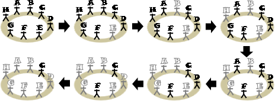數人和殺人的動作可以對應到佇列（queue）的操作。首先把每個人依序放進佇列，接著連續pop和push 4人，接著pop第5人時，不要將他放回佇列裡面即可！
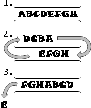範例：用圖論作為模型，模擬小畫家倒墨水。
圖論的觀點之下，Flood Fill Algorithm其實就是運用Depth-first Search找到Connected Component。
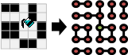範例：System of Difference Constraints in Linear Programming
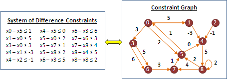問題：給定變數x1到xN，並給定一些xi-xj≤c的式子，作為條件限制。請判斷有沒有解，如果有解就求出其中一組解。
這個問題可以巧妙的轉換成最短路徑問題。x1到xN看作是圖上的N個點，一條xi-xj≤c的限制式子看作是一條xj到xi的邊，其權重是c。
如果無解，那麼圖上有負環。如果有解，那麼圖上各點的最短路徑長度就是其中一組解。為了讓圖上各點都有最短路徑長度值，可參考Johnson's Algorithm的做法。
UVa 515 ICPC 2058
範例：Sentiment Relation in Social Balance Theory
從前有一位心理學者認為，人與人之間的關係，可以粗略分為兩種：互相喜歡、互相討厭。這種關係稱作Sentiment Relation，是一種雙向關係，而且擁有喜歡與討厭兩種類型。假使兩人之間好惡分明，沒有亦敵亦友的情況，就會形成Sentiment Relation。
like hate A<------>B A<------>B
另外Sentiment Relation還具有相當特殊的性質，有點像是transitivity、symmetry、antisymmetry的總合。這種性質的最佳寫照，諸如同仇敵愾、合縱連橫等等，翻成白話就是這樣：
1. 朋友的朋友就是我的朋友。 2. 朋友的敵人就是我的敵人。 3. 敵人的朋友就是我的敵人。 4. 敵人的敵人就是我的朋友。
在Sentiment Relation所形成的社交結構當中，如果產生了好與惡的矛盾，那麼這樣的社交結構就是不平衡的；如果好與惡合理，那麼這樣的社交結構就是平衡的。心理學者相信，當社交結構不平衡的時候，個體會嘗試改變自己的觀點，讓社交結構趨向平衡。
balance:
A A like like
like / \ like hate / \ hate ----A----
/ \ / \ / ha|te \
B-----C B-----C B-----C-----D
like like hate hate
imbalance:
A A like like
hate / \ hate like / \ like ----A----
/ \ / \ / ha|te \
B-----C B-----C B-----C-----D
hate hate like like
後來心理學者進一步發現，當社交結構達到平衡，所有人可以分成兩大陣營，使得陣營內部的關係都是互相喜歡，陣營與陣營之間的關係都是互相討厭。
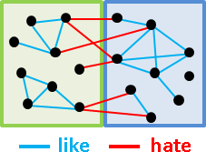說了這麼多終於要提到重點。現在問題來了，假設社交結構是平衡的，而我們也知道一些兩兩相互喜歡、相互討厭的資訊時，我們該如何確認誰在同一陣營、誰在不同陣營呢？
一、以Bipartite Graph作為模型：
把社交結構看作是Bipartite Graph，Bipartite Graph的兩側分別是兩大陣營。首先利用Graph Traversal走訪喜歡的邊，找出所有連通分量，並各自縮成一點。然後再度利用Graph Traversal走訪討厭的邊，嘗試建立Bipartite Graph，如果無法建立則表示社交結構不平衡。
二、以聯集為基礎來建立新模型：
當x與y是朋友： x及朋友、y及朋友，都是好朋友。 x的敵人、y的敵人，都是好朋友。 當x與y是敵人： x及朋友、y的敵人，都是好朋友。 x的敵人、y及朋友，都是好朋友。
用Disjoint Sets的union，把好朋友們聯集在一起。要判斷同一陣營，就看看大家是不是同一群好朋友；要判斷不同陣營，就看看對方的敵人是不是跟自己是同一群好朋友。由於一開始每個人都沒有敵人，所以替每個人都設定一個虛擬的假想敵。
UVa 10158 10505 10608
範例：點燈遊戲（Lights Out Puzzle）（Minimum All-Ones Problem）
http://oddest.nc.hcc.edu.tw/math171.htm
嘗試熄滅（或點燃）所有燈。按下任何一個開關，都會連帶影響自己及其四周的燈，亮變暗、暗變亮。
無論同時按或分開按、先按或後按，造成的影響都一樣。一個開關按兩次，將相互抵銷，如同按零次。
一、以函數當作模型，函數是各盤面之間的關聯：g(舊盤面) = 新盤面，g為一種按開關的方式。這種模型相當常見，但是不適用此題。
二、以函數當作模型，函數是開關和盤面的對應關係：f(按下的開關) = 盤面，f是遊戲規則。
只要求出f的反函數，就可以用盤面判斷按下的開關。巧妙的是，f是線性函數，故可以解線性方程組來找到反函數。解線性方程組可以用「高斯消去法」。
加法運算：f(同時按下開關A和B) = f(按下開關A) + f(按下開關B)。設定成xor。 倍率運算：f(按下開關A一共k次) = k f(按下開關A)。k模二之後，設定成and。
然而f不見得有反函數，端看遊戲規則和盤面形狀。當f有反函數，無論盤面長得如何，都一定有解。當f沒有反函數時，則難以確定盤面是否有解，屬於NP-complete問題。
UVa 10309 10318
Reduction
套用模型當中，有一種情況是：原問題是某一個問題的特例。套用通例，解決特例，稱作「歸約」。
因為通例相對複雜、特例相對單純，所以原問題極可能存在更快更好的解法。
範例：最短間距（Minimum Gap Problem）
一條鐵道，沿途設站。已知里程，請找出距離最近的兩站。
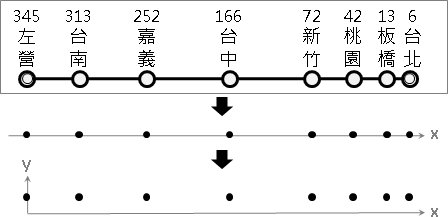以數線作為模型，鐵道對應到數線、車站對應到點座標，距離最近的兩站對應到「數線上距離最近的兩個點」。
想要解決「數線上距離最近的兩個點」，可以套用先前介紹的「平面上距離最近的兩個點」。這兩個問題的本質是相同的，前者是一維版本，後者是二維版本；前者是特例，後者是通例。
只要把每個車站的座標，增加一個維度，該維度的數值通通設定為相同數值，然後計算「平面上距離最近的兩個點」，就得到距離最近的兩站。
「數線上距離最近的兩個點」是特例、「平面上距離最近的兩個點」是通例，我們有機會替「數線上距離最近的兩個點」找到計算時間更短、更有效率的演算法。
範例：用生命遊戲作為模型，模擬生命遊戲。
Programming: Array Indexing
Array Indexing
「索引」是電腦的絕技！一個元素存放到陣列之後，不論是在陣列的哪個地方，只要利用索引值（index），就能一瞬間找到元素。大多數的演算法都運用了「索引」的技巧，讓程式執行速度更快。
以下介紹索引的常見運用方式。
一、定位
將物件放入陣列中，array[位置] = 物件。
當元素很多時，我們可以放到陣列裡。我們只要記錄索引值，依舊可以常數時間得到元素。
範例：求最大值
將元素連續地放入陣列，若想記錄一元素，僅需一索引值。
範例：求子字串
將元素連續地放入陣列，若想記錄一區間，僅需頭尾的索引值。
範例：連續數字和
將元素連續地放入陣列，利用問題本身的數學性質以及索引值，快速得到答案。
範例：求中位數
將元素依照大小順序並連續地放入陣列，利用索引值得到位於中間的元素。
範例：二分搜尋法（Binary Search）
將元素依照大小順序並連續地放入陣列，然後夾擠索引值。
如果元素放入串列，則沒有索引值，無法使用二分搜尋法。
範例：二元樹（Binary Tree）
元素的索引值對應到樹的結構，是一種特殊的定位。
範例：堆疊（stack）、佇列（queue）
元素連續地放入陣列，然後以改變索引值的方式，來動態增減堆疊及佇列的元素。
二、歸類並標記
物件直接作為陣列的索引值，array[物件] = 物件的屬性。
範例：正整數集合
物件：正整數。物件的屬性：是否在集合裡頭出現。
範例：統計英文字母出現次數
物件：英文字母。物件的屬性：英文字母的出現次數。
範例：計數排序法（Counting Sort）
索引值的大小順序，恰是元素的大小順序，亦可用於排序。
範例：雜湊表（Hash Table）
元素的索引值由特殊方法決定，是一種特殊的歸類。
三、轉換
array[物件] = 另一個物件。概念等同數學術語「函數」。
範例：取代（substitution）、移位（transposition）
密碼學的基礎概念。取代是文字的轉換，移位是位置的轉換。
定址的時間複雜度
當索引值大小為N，有人認為定址的時間複雜度是O(log2N)，也有人認為是O(1)。兩種說法都有依據。
以數學的觀點來看：N總共有log2N個位元，運用二元樹的觀念，依照各個位元的數值是0或是1進行分枝，分枝到底後就完成定址了。所以定址的時間複雜度是O(log2N)。
以電路的觀點來看：一顆中央處理器可以平行處理32位元（現在已有64位元），只要是介於0到232-1的索引值，都可以在1單位時間完成定址，而不必用32單位時間來完成定址。所以定址的時間複雜度是O(1)。
大家傾向假設定址的時間複雜度是O(1)。
定址的範圍
方才提到一顆中央處理器可以平行處理32位元，理論上可以定址到232以內的位址。一個位址一般擁有1byte的記憶體大小，所以可以運用的記憶體就有232byte = 4GB 這麼多。
但是作業系統會保留一些位址、預留一些記憶體空間以維持系統運作，所以使用者實際可以運用的記憶體其實不到4GB。
當記憶體沒有插到4GB的時候，作業系統利用一種叫做virtual memory的技術，以硬碟空間補足記憶體不足4GB的部份。
位址是連續不斷的，我們寫程式也都直接假設位址對應到的記憶體空間是連續不斷的，然而實際上並不是連續的。作業系統運用一種叫做paging的技術，藉由page table，讓記憶體看起來是連續的。
Programming: Recursion
Recursion
在函式內部呼叫原本的函式，叫做「遞迴」。
遞迴與迴圈一樣，將一件事情重複很多次，每次都改變一點點。遞迴與迴圈一樣，必須設定起始條件、結束條件、改變量，以避免無窮遞迴。
範例：階乘
1乘以2乘以3……乘以n。
範例：兔子數列
0 1 1 2 3 5 8……，求第n項。公式f(n) = f(n-1) + f(n-2)。
迴圈輔以堆疊才能樹狀分枝。遞迴可以輕易地樹狀分枝。
UVa 110 177 183 839
Programming: Metaprogramming
Metaprogramming
設計一支程式來製造程式碼，令該程式碼充分運用程式語言自身擁有的能力，輕鬆地、更有效率地完成更多事情。
範例：四則運算式
5 + 8 * (2 - 3) + 7 * -6 / (2 - 1) + 1
身經百戰的演算法設計高手，必然不假思索說出：stack，把所有符號依序放入stack，依照運算符號的優先次序push和pop。聽來簡單，實作起來還是頗麻煩。
這裡要介紹的是更輕鬆、更強悍的方法：寫程式製造一支會進行四則運算的程式。大家都知道C/C++的語法當中，就有四則運算的語法了。現在來設計一支程式，製作出四則運算的程式碼吧！
如果輸入方才的四則運算式，就會產生如下程式碼，檔名為temp.cpp。
然後編譯temp.cpp、執行一下，就有答案了。甚至可以把編譯、執行的指令，統統寫進程式碼當中：
範例：quine
一支程式，其功能是輸出本身程式碼。純娛樂。
Template Metaprogramming
C有個功能叫macro，可以代換程式碼。C++有個更厲害的功能叫template，可以代換並且遞迴展開程式碼。
運用template，編譯時期即可計算答案，令答案變成程式碼的一部分；執行時期不必花時間計算，直接印出答案！
不過這是個怪招，平常沒人這樣做，大家當作娛樂看看就好。儘管在C++裡面是怪招，但是在Haskell裡面卻是基本功。
範例：階乘